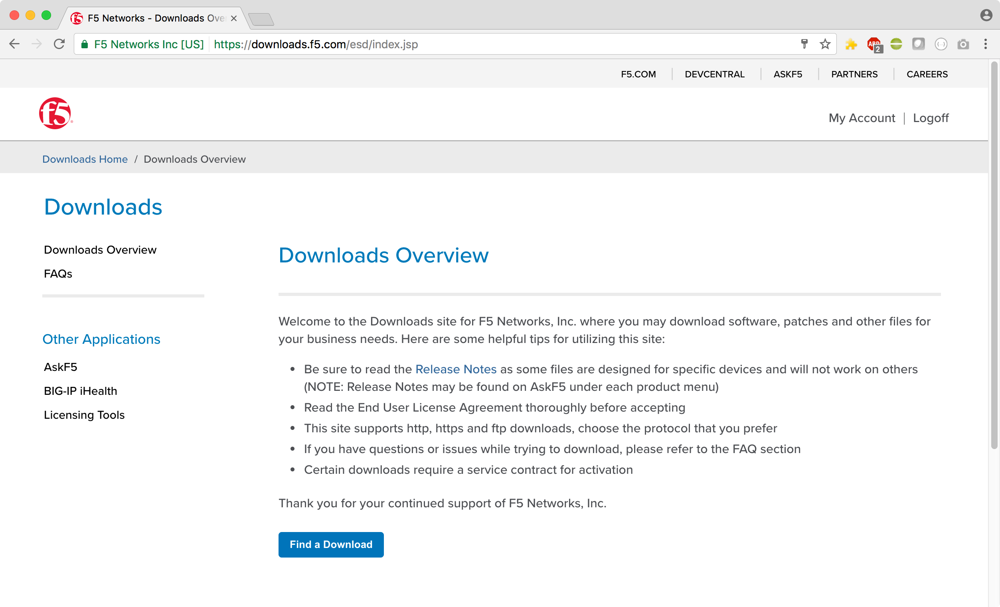

Community Training Classes & Labs > Getting Started with F5 BIG-IP Index
Getting Started¶
The purpose of this guide is to provide a sampling of hands-on exercises to better understand deployment of F5 SSL Orchestrator.
WHAT IS THE F5 SSL ORCHESTRATOR?¶
F5 SSL Orchestrator (SSLO) provides an all-in-one appliance solution designed specifically to optimize the SSL infrastructure, provide security devices with visibility of SSL/TLS encrypted traffic, and maximize efficient use of that existing security investment. This solution supports policy-based management and steering of traffic flows to existing security devices, designed to easily integrate into existing architectures, and centralizes the SSL decrypt/encrypt function by delivering the latest SSL encryption technologies across the entire security infrastructure.
Multi-layered security¶
In order to solve specific security challenges, security administrators are accustomed to manually chaining together multiple point products, creating a bare-bones “security stack” consisting of multiple services. A typical stack may include components like Data Leak Prevention (DLP) scanners, Web Application Firewalls (WAF), Intrusion Prevention and Detection Systems (IPS and IDS), Malware Analysis tools, and more. In this model, all user sessions are provided the same level of security, as this “daisy chain” of services is hard-wired.
Dynamic service chaining¶
Dynamic service chaining effectively breaks the daisy chain paradigm by processing specific connections based on context provided by the Security Policy, that then allows specific types of traffic to flow through arbitrary chains of services. These service chains can include five types of services: layer 2 inline services, layer 3 inline services, receive-only services, ICAP services, and HTTP web proxy services.
Topologies¶
Different environments call for different network implementations. While some can easily support SSL visibility at layer 3 (routed), others may require these devices to be inserted at layer 2. SSL Orchestrator can support all of these networking requirements with the following topology options:
- Outbound transparent proxy
- Outbound explicit proxy
- Outbound layer 2
Security Policy¶
Inbound reverse proxy
Existing application
Inbound layer 2
The SSLO Security Policy provides a rich set of context-aware methods to dynamically determine how best to optimize traffic flow through the security stack. Context can minimally come from the following:
Source and destination address/subnet
URL filtering and IP intelligence - Subscriptions
Host and domain name
Destination port
IP geolocation
Protocol
Topology System Settings SSL Configuration Service Service Chain Security Policy Interception Rule Summary
Users/Devices
|image2|Firewall
Internet
WHAT’S NEW IN SSLO 4.0 AND 5.0?
SSLO 4.0 provides significant architectural improvements over previous versions. Here are just a few of those updates:
SSLO 4.0 replaces the complex iRules-based traffic classification and service chaining functions of previous versions with an Access per-request policy engine, providing much greater flexibility in traffic management options.
SSLO 4.0 optimizes traffic flow through security services by replacing the complex “proxy hops” with a new “tee connector” – essentially a mid-proxy tap – that allows decrypted traffic to flow through security devices out-of-band from the main client-server proxy traffic. This is implemented as new “Service” and “Connector” profiles.
SSLO 4.0 introduces new “split session” client and server SSL profiles, that are now responsible for carrying SNI signaling information across the inspection zone.
SSLO 4.0 further optimizes traffic flow by reducing the amount of iRule data plane management, also making it easier to add customization iRules.
SSLO 4.0 introduces three new network topologies. Along with the existing outbound transparent and explicit proxy flows, 4.0 now also supports inbound layer 3 (reverse proxy) inspection, and layer 2 transparent inbound and outbound topologies.
SSLO 4.0 also includes the following new functionality features:
Explicit and transparent web proxy devices as an inline security service.
Front-end explicit proxy authentication via APM integration (relies on existing SWG-Explicit access policy).
FTPS (passive), SMTPS, POP3S, and IMAPS protocols inspection.
ICAP advanced filtering via LTM CPM policy (relies on an existing CPM policy).
URL filtering as a function of the Access per-request service chaining policy.
Authentication headers - ability to define additional HTTP headers to pass to inline security services.
vCMP support - ability to select existing VLANs for inbound and outbound to/from inline services.
SSLO 5.0 includes the following updates:
Guided Configuration user experience, a complete refresh of the SSLO UI based on the Access Guided Configuration engine.
Discreet “topology” definitions and the ability to define how SSLO listens for and processes traffic flows.
Re-entrant, wizard-driven workflows. Based on the selected topology, SSLO 5.0 presents an intuitive workflow UI that walks the user through a simplified object creation process.
WHAT’S NEW IN SSLO 5.1?¶
SSL Orchestrator 5.1 was released on December 17th, 2018, a few days after the release of BIG-IP 14.1 with SSLO
SSLO 5.1 contains significant updates to the product and is therefore recommended (over 5.0) for customer environments.
Additional information about SSLO 5.1, including updates and fixes, can be found in the official release notes: https://support.f5.com/kb/en-us/products/ssl-orchestrator/releasenotes/product/relnote-ssl-orchestrator-14-1- 0-iapp-5-1.html
SSL Orchestrator 5.1 is available on the F5 downloads site, https://downloads.f5.com, under the SSL Orchestrator section, as f5-iappslx-ssl-orchestrator-14.1.0-5.1.254.rpm.
This lab guide and corresponding Ravello lab environment are prepared for SSLO 5.1. If installing a fresh BIG-IP 14.1 instance, it is recommended to immediately download the 5.1 package and install over the built-in 5.0 version. To do this, in the SSLO UI, click on SSL Orchestrator -> Configuration -> Upgrade SSL Orchestrator, choose the downloaded SSLO 5.1 package and then upload and install.
Lab Topology¶
Each student will have a BIG-IP VE environment with IP addressing as below:

| Component | VLAN/IP Address(es) | Credentials |
|---|---|---|
| Jump Host |
|
|
| Ansible Host |
|
|
| BIG-IP01 |
|
|
| Lamp Host |
|
|
Connect to lab¶
Access f5 training portal
- Open a browser and go to student portal site as provided by instructor.
Connect to Jump server
Look for the xubuntu-jumpbox-vxx. You will use the xubuntu jumpbox for all the labs. (see below)
You can click on RDP to RDP to the Xubuntu jumpbox or you can select the CONSOLE link and access the jumpbox via your browser. The CONSOLE link requires you turn off pop-up blockers.

{kind=link}
Connect to BIG-IP admin gui
- From Jumpbox, open BIG-IP Admin GUI
- Open Chrome browser found on launchpad at bottom of screen
- Click on
bigip01on favorites bar - Login with username:
adminand password:admin
Connecting to ansible host.
- From Jumpbox, SSH to Ansible host
- Open Terminal Emulator Window found on launchpad at bottom of screen
- Type
ssh root@10.1.1.150 - Type
yeswhen asked “Are you sure…” - If prompted, password is password
- Change directory to access lab directory folder
- type
cd f5-ansible-workshopto change directory to location of the ansible lab. - type
pwdto confirm path is /root/f5-ansible-workshop.
- type